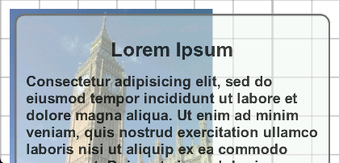

When you view browser pages or web apps and tip the device counter-clockise from portrait to landscape orientation, the browser re-orients content accordingly.
Web pages and web apps can modify their appearance when the device is tipped in 90° increments. The orientation CSS media query allows you to assign different interface features depending on portrait or landscape orientation. In this case, landscaped pages use a two-column layout:
@media all and (orientation: landscape) { article { -webkit-column-count: 2; } h1 { -webkit-column-span: all; } }
The result can be seen in this example, by resizing the browser window so that it is alternately taller or wider:
JavaScript can respond similarly to orientationchange events that fire on the window, checking the state of the window.orientation property for portrait or landscape values:
window.addEventListener('orientationchange', function(e){ var isUpright = (window.orientation == 'portrait'); });
When you apply a mobile viewport, flexible layout elements conform to the width of the device's window. Ordinarily, tipping the device to landscape orientation magnifies the content, keeping the overall width constant. To illustrate the range of available options, this example shows a flexible layout against a fixed-size background element. In landscape view, the page simply magnifies:
To disable magnification and make flexible elements expand to the wider screen, set the user-scalable=no viewport property:
<meta name="viewport" content="width=device-width, user-scalable=no"/>
Doing so disables pinch and double-tap gestures that otherwise allow users to magnify content. The following shows how the same page appears with scaling disabled. The layout element changes dimensions, but the background element shows that the magnification remains constant:
As shown above, the Browser independently magnifies text when shifting to landscape orientation. To keep the text size from changing, disable the -webkit-text-size-adjust CSS property. The following affects the entire page:
html { -webkit-text-size-adjust: none }
The following shows the resulting page, with text appearing at the same size:
Warning: Applying the above CSS within a desktop-oriented interface interferes with the browser's zoom feature, which is not affected by mobile viewport settings. In that case, when users zoom a page, the dimensions of screen elements changes, but the size of the text does not. If your are deploying a hybrid mobile interface adapted for desktop or tablet browsers, use media queries to narrow the scope of the above CSS. For more information, see Responsive Interfaces.
To review, use the following techniques to adapt flexible layouts to landscape orientation:
- Set the viewport's width=device-width to fit content with the screen dimensions.
- Set the viewport's user-scalable=no to widen flexible content in landscape view.
- Set the -webkit-text-size-adjust:none CSS property to keep text from changing size.
- Apply flexible layout elements that adapt to available dimensions.
- Optionally, use orientation media queries to change layout, and orientationchange handlers to respond in other ways.
XXX 8.5
By default, mobile browsers respond to simple 90° shifts between portrait and landscape orientation by adjusting magnification. This section clarifies various ways to modify that behavior:
- The user-scalable viewport property disables magnification, and instead forces flexible layout elements to adjust to the window's altered dimensions.
- The -webkit-text-size-adjust CSS property allows you to separately disable the browser's default text magnification.
- The orientation CSS media query allows you to actively target designs to portrait and landscape orientations.
- The orientationchange event allows scripts to respond to changes in orientation. Alternately, media query listeners can respond to changes in the orientation media query's state.
The final section shows cases when multicolumn CSS properties may be appropriate for landscape-oriented mobile layouts.
See Orientation and Motion for information on how to respond to smaller shifts in orientation, or to determine geographic orientation.
Note: There is not yet a standard way to override browsers' default orientation-shifting behavior if you want to lock content to a particular orientation.
Adapting the Default Screen Layout
The Constraining Touch Response section shows how to specify a viewport that disables double-tap and pinch-zooming:
<meta name="viewport" content="width=device-width, user-scalable=no, initial-scale=1" />
Disabling the user-scalable property not only prevents users from changing the magnification level with double-tap and pinch-zoom gestures, but also prevents the browser from doing the same in response to orientation changes. Ordinarily, shifting to landscape orientation magnifies content so that the screen width matches that of portrait orientation:
.
Since scaling is not an option with user-scalable disabled, as an alternative the width of the content increases to fill the space, in this case exceeding the width of the background graphic:
 .
Screen layouts can thus adapt to shifts in orientation, but only if they use flexible measurements. The example above uses absolute positioning to size the text element relative to the edges of the screen, but setting its width to 100% would have much the same effect.
Controlling Text Adjustment
The example above is set to disable scaling, but the the user-scalable viewport property only affects the dimensions of layout elements. By default, the size of text still increases when tipping the handset to landscape orientation.
The following CSS disables text adjustment throughout a page:
html { -webkit-text-size-adjust: none }
Alternately, specifying a percentage varies the text size relative to the default. Setting adjustment to 100% has the same effect as setting it to none.
The following shows how -webkit-text-size-adjust:none, along with the user-scalable:no viewport property, neatly adapts a flexible mobile layout to landscape orientation:

Note: Like viewport properties, the -webkit-text-size-adjust CSS property only affects the appearance of content on mobile handsets.
Orientation via CSS
The examples above allow you to override default browser behavior, but no more than that. Applying orientation CSS media queries allows you to specify design elements for each orientation.
Unlike other media queries that yield static values, useful when specifying an overall mobile layout, the value of orientation may change dynamically between portrait and landscape based on user input.
The following example uses media queries to display portrait- or landscape-oriented images separately, based on the handset's orientation:


When viewed on a desktop browser, orientation changes can be mimicked by resizing the window.
When the page loads, a script determines each image's orientation based on its inherent height and width properties. After that, the entire interface is driven by the following CSS, which toggles display of content classed either port or land:
@media all and (orientation: portrait) { .land { display : none; } } @media all and (orientation: landscape) { .port { display : none; } }
Tappable navigation control bars, one for each set of images, are available at the top of the page. Their display is also driven by the above CSS.
Orientation via JavaScript
Changes in orientation state can be captured from within JavaScript via the window's orientationchange event. It works like the window's resize event, but only fires when width exceeds height or vice versa. (Mobile browser windows are fixed, and only allow two possible sets of window dimensions.)
window.addEventListener('orientationchange', orientationHandler); // or... window.onorientationchange = orientationHandler; function orientationHandler(e) { var isUpright; if (!!window.orientation) { isUpright = (window.orientation == 'portrait'); } else { isUpright = (window.innerWidth < window.innerHeight); } // ...do something based on value of isUpright }
Note that the orientationchange event does not identify the new orientation state, so that information needs to be calculated within the handler. If the window.orientation property is available, check it for portrait or landscape values. Otherwise, compare the window's width and height directly.
As an alternative to orientationchange events, browsers are starting to support media query listeners, which fire whenever there is a change in a media query expression's matching state. Make sure to initially check support for this relatively new feature:
if (!!window.matchMedia.addListener) { window.matchMedia("(orientation: landscape)").addListener(orientationHandler); } else { window.addEventListener('orientationchange', function(e){ // use alternate handler shown above }); }
The handler is passed a MediaQueryList object, whose matches property determines orientation:
function orientationHandler(mql) {
if(mql.matches) {
// landscape
}
else {
// portrait
}
}
See Script-based Adaptation for more information on how window.matchMedia may align JavaScript functionality with CSS.
Multicolumn Layout
Level 3 CSS allows you to divide blocks into different columns of dynamically flowing text. While this feature is most useful for large-screen layouts, two-column formatting may occasionally apply to landscape-orientated mobile content as well.
The following example uses media queries to display a single-column layout in portrait mode. In landscape mode, it displays a two-column layout featuring shorter line lengths:

The landscape-oriented layout is driven by the following CSS:
@media all and (orientation: landscape) { article { -webkit-column-count : 2; -webkit-column-gap : 2em; -webkit-column-rule : thin dashed #aaaaaa; } }
The -webkit-column-count property divides the main content block into two columns. The -webkit-column-gap property defines the width of the gutter that separates the two columns. The -webkit-column-rule property places a rule between each column, using the same syntax conventions as the border property.
Heading elements within the block use -webkit-column-span to override the default layout, potentially dividing it into separate two-column segments:
h1,h2,h3,h4 { text-align : center; -webkit-column-span : all; }
In this example, the image is set to float within a narrow space when viewed in portrait mode, but to fill a full column within landscape mode.
There are two problems with the example shown above:
- Content set to span columns, such as the heading at the top of the above page, may not always be placed reliably when switching between portrait and landscape orientation. (This is a bug.)
- More significantly, when users scroll to the bottom of the first column, they are obliged to awkwardly scroll back up to the top of the entire page to continue onto the second column.
To address these problems, this modified example divides the content into much smaller segments, suitable for viewing in each screen view:

In this case, two-column formatting is assigned to paragraph text rather than to the overall content block.
@media all and (orientation: landscape) { p { -webkit-column-count : 2 } }
Narrowing the scope of the multicolumn formatting ensures the headings reliably span both columns. Also in this example, floating graphics override the default two-column layout of the paragraphs within which they are nested. Designers must experiment to understand the complex set of layout options available.
Note: When changing orientation, users may find it confusing when interface items become rearranged on the screen, as in the example above. Be careful when customizing landscape-oriented layouts.